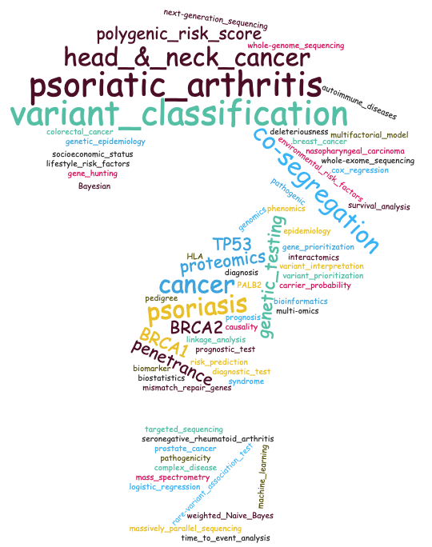

No Code Website BuilderAssociate Professor in the Research Track at the University of Utah.
Permanent URL: BJFengLab.org

We develop novel algorithms and software for biomedical data analysis.
Classifying genetic variants into neutral or pathogenic categories is essential in clinical genetic testing. We develop algorithms and software for this purpose and participate in developing clinical standards and guidelines.
We conduct multi-omics (genome, transcriptome, proteome, interactome) studies to identify biomarkers for treatment outcome and prognosis prediction.
Patients with cutaneous psoriasis often have unrecognized psoriatic arthritis (PsA). Delays in diagnosing and treating PsA frequently contribute to functional limitations and irreversible joint damage. We develop screening tools and diagnostic tests to detect PsA early in psoriasis patients.
BayesDel (PMID: 27995669) has been incorporated into gene-specific variant classification guidelines for TP53 (PMID 33300245), BRCA1, and BRCA2 (PMID 39142283), following the standards set by the American College of Medical Genetics and Genomics (ACMG) and the Association for Molecular Pathology (AMP), as well as a quantitative multifactorial strategy (PMID: 34273903). For ACMG/AMP guidelines related to other genes, please refer to Pejaver et al. (PMID: 36413997). For disease gene discovery research, please check out the VICTOR package.
PERCH (Polymorphism Evaluation, Ranking, and Classification for Heritable Traits) (PMID: 27995669) is a framework for interpreting genetic variants identified from next-generation sequencing. This software implements a novel deleteriousness score named BayesDel, an improved guilt-by-association algorithm, rare-variant association tests, and a modified linkage analysis. These components are integrated in a quantitative fashion for gene and variant prioritization.
If you have used BayesDel or PERCH, please cite
Bing-Jian Feng*. Human Mutation 2017 Mar;38(3):243-251. PMID: 27995669.
Other references:
Fortuno et al. Human Mutation 2021 Mar;42(3):223-236. PMID: 33300245.
Pejaver et al. American Journal of Human Genetics. 2022. PMID: 36413997.
Parsons et al. American Journal of Human Genetics. 2024. PMID: 39142283.
VICTOR (Variant Interpretation for Clinical Testing Or Research) is a software package for the analysis of next-generation sequencing (germline or tumor, whole-exome or whole-genome) data starting from a raw Variant Call Format (VCF) file. Written with >80,000 lines of C++ and >3,500 lines of bash codes, VICTOR was designed to analyze sequencing data comprehensively, including quality control, cryptic relatedness and population structure inference, database querying, functional interpretation of variants, gene-based and gene set-based rare variant association testing while accounting for ancestry and population substructure, gene set enrichment analysis, gene network analysis, cosegregation analysis, polygenic risk score calculation, and secondary finding reporting. This package includes data files for the GRCh37 and GRCh38 genomes and scripts for high-performance computing.
Other references:
Dumont et al. Cancers. 2022;14(14):3363. PMID:35884425.
Bing-Jian Feng, Julie L. Boyle, Jun Wei, Courtney Carroll, Nathan A. Snyder, Zhuqing Shi, S. Lilly Zheng, Jianfeng Xu, William B. Isaacs, and Kathleen A. Cooney. Using gene and gene-set association tests to identify lethal prostate cancer genes. Prostate Cancer and Prostatic Diseases. 2024 Aug. PMID: 39154125.
Cosegregation analysis (testing whether a genetic variant and its associated disease(s) co-segregated within a pedigree) is useful for interpreting genetic test results. COOL (COsegregation OnLine) (PMID:32773770) is a web server for cosegregation analysis recommended by ClinGen guidelines (PMID 38103548). This server provides penetrance for 16 cancer genes (BRCA1, BRCA2, CDH1, MLH1, MSH2, MSH6, NF1, PALB2, PMS2, PTEN, RAD51C, RAD51D, TP53, ATM, CHEK2, MEN1). It also supports other cancer genes if you provide a relative risk file or non-cancer genes if you provide a penetrance file. The website deletes all pedigree data immediately after computation to protect data privacy. Here are the links for the User Manual and COOL v3 online calculator.
PedPro: This versatile program is designed to handle pedigrees with ease. It can check for errors, detect and break loops, remove uninformative individuals for linkage analysis, find obligatory carriers, identify clusters of individuals based on connections and affection status, identify and remove isolated individuals, merge connected families, and calculate individual weights for a case-control association test. PedPro also offers the flexibility to convert different pedigree files into a Comprehensive Pedigree Format (CPF), which enhances file sharing among laboratories and improves usability and re-usability. This format contains all the necessary information for cosegregation analysis, risk prediction, and penetrance estimation.
TrendTDT (PMID: 17976242) introduces a novel family-based statistical method for testing gene-disease associations. It was designed explicitly for copy-number variations (CNVs) or variable-number tandem repeats (VNTRs).
If you have used COOL or PedPro, please cite
Sophie Belman, Michael T Parsons, Amanda B Spurdle, David E Goldgar, Bing-Jian Feng*. Considerations in assessing germline variant pathogenicity using cosegregation analysis. Genetics in Medicine 2020 Dec; 22(12):2052-2059. PMID:32773770.
Other references:
Bing-Jian Feng*, David E Goldgar, Marilys Corbex. Trend-TDT - a transmission/disequilibrium-based association test on functional mini/microsatellites. BMC Genetics. 2007;8:75. PMID:17976242.
PAPRIKA (Psoriatic Arthritis Prediction and Identification Question Bank for Various Ancestries) version 1 (PMID 37691268) is an assembly of questions for predicting and identifying psoriatic arthritis (PsA) in psoriasis patients. This question bank was created to facilitate the early detection of PsA. It contains novel clinical predictors we discovered from a prospective cohort study (PMID 33858978). PAPRIKA contains example images obtained from various databases; we cannot put the photos in the public domain due to licensing issues. If you need the images, please get in touch with us. We will point you to the databases.
This Bank uses a "Psoriasis Thickness Reference Card" (PMID 38497631). We provided a video (PMID 38497631) about how to make this card at home. Patients can complete the questions without assistance from a healthcare provider.
For PAPRIKA, please cite
Jessica A Walsh, Courtney Carroll, Kristina Callis Duffin, Jing Wang, Gerald G. Krueger, Bing-Jian Feng*. PAPRIKA: A Question Bank for Assessing Psoriatic Arthritis Risk in Individuals of Diverse Ancestries. Arthritis Care & Research 2024 Mar;76(3):421-425. PMID: 37691268.
For the "Psoriasis Thickness Reference Card" and the video, please cite
Carroll C, Adalsteinsson J, Prouty M, Callis Duffin K, Krueger GG, Walsh JA, Feng BJ*. Measuring Psoriasis Severity at Home. Journal of Visualized Experiments 2024 Mar 1:(205). PMID: 38497631.
Other references:
Sophie Belman, Jessica A Walsh, Courtney Carroll, Michael Milliken, Benjamin Haaland, Kristina Callis Duffin, Gerald G Krueger, Bing-Jian Feng*. Psoriasis Characteristics for the Early Detection of Psoriatic Arthritis. Journal of Rheumatology 2021 Oct;48(10):1559-1565. PMID: 33858978.
No Code Website Builder